How the new TPS website is built, who owns each part, and what it is likely to cost each month. This covers the public website launch only, not the future CRM.
Confirmed agreed scope Proposed awaiting approval Estimate modelled, not measured. Prices for Cloudflare R2, Vercel Blob, Vercel Functions and DigitalOcean were checked on 25 November 2026; other rates come from planning (section 11).
Recommendation: host the website on Vercel (serverless), keep media in Cloudflare R2, and keep every account in TPS's name. No server to rent or maintain, and the launch bill is essentially the $20 Vercel seat.
Visitors reach three separate services: Vercel for the website pages and the consultation form, Cloudflare for photos and videos, and SimplyBook for treatment bookings. Most page views are served from cache and run no application code at all.
Bottom line: Three managed services and no servers to run. Pages come from cache; only the consultation form runs code.

TPS owns the domain, every provider account, the production data and the billing. The developer works inside those accounts with role-based access. Think of a house: TPS owns the land and pays for materials and utilities, and the developer builds and maintains it under contract.
Bottom line: TPS owns every account, the domain, the data and the bills. The developer works with access TPS can remove at any time.
| Cost type | Who bills TPS | Covers |
|---|---|---|
| Provider fees | Vercel, Cloudflare, database host, directly | Hosting, storage, compute and plan subscriptions |
| Maintenance fees | Developer | Operations support within the agreed maintenance scope |
| New development | Developer, quoted separately | New features or changes outside maintenance |
The developer does not resell hosting. Reselling would need a separate commercial agreement with its own support and liability terms.
A rented server (VPS) is a machine of fixed size that is billed whether or not anyone visits. Serverless means the provider runs the operating system and scaling, and bills a plan fee plus what is actually used. Neither is always cheaper: under heavy, steady load a VPS can cost less.
Bottom line: For a site this size, serverless costs less overall: about $0.02 a month in compute against $12 for the smallest suitable server, with nothing to maintain.
Developer maintains every layer. Billed for reserved capacity, even when idle.
Developer maintains the application. Billed as plan + measured CPU, memory and invocations.
The gap between the flat line and the curve is capacity a VPS bills for but nobody uses. At sustained high demand that gap closes, and the per-unit serverless rate can make it the more expensive option.
The same 1 vCPU / 2 GB of capacity priced both ways. A VPS costs the same whatever it does. Serverless costs grow with how much of the month your code is actually running.
| Scenario | Busy | VPS | Vercel |
|---|---|---|---|
| Idle all month | 0% | $12.00 | $0.00 |
| TPS at 50k visitors (2,500 form submissions) | ~0.003% | $12.00 | $0.02 |
| Busy about 2 hours a day | ~8% | $12.00 | ~$12 |
| Busy 24/7 | 100% | $12.00 | ~$150.53 |
Vercel at 100%: 730 h × $0.177 CPU + 730 h × 2 GB × $0.0146 memory = $150.53. Assumes memory is open only while code runs. VPS: DigitalOcean Basic 1 vCPU / 2 GB at $12, billed per second and capped at 672 hours a month, and still billed when powered off. A Basic Droplet's vCPU is shared, so this is a rough match. Leaves out labor and Vercel's $20 seat. Prices read 25 November 2026.
| VPS (serverful) | Serverless (Vercel) | |
|---|---|---|
| Bill | Fixed and predictable, capped at the plan price | Tracks usage; near zero at low traffic, uncapped unless you set a spend limit |
| Traffic spike or bot attack | Bill stays the same; site may slow down or go offline | Site stays up; bill rises (use firewall rate limits and a spend limit) |
| Price per unit of compute | Low when busy | Over 10× higher at full use |
| Response speed | Always on, no cold starts | Occasional slower first request after quiet periods |
| Long jobs and always-on processes | Supported by default | Per-call time limit (300 s default); always-on work needs extra products |
| Data kept between requests | Can stay in memory | Needs a separate database or cache, each billed separately |
| Operations work | You handle firewall, TLS, OS patches, backups, monitoring, scaling, outages | Provider handles them; you ship application code |
| Lock-in | Low; any Linux host works | Higher; code and configuration follow Vercel's conventions |
| Best fit | Steady heavy load, always-on APIs, background workers | Low or uneven traffic, small teams, sites like the TPS launch |
A form submission takes about half a second, but the processor is busy for only a fraction of it. The rest is waiting for Cloudflare and Zoho to answer. With Vercel Fluid Compute, CPU is billed only while it is active, and other requests can use the same instance while one waits.
Bottom line: Vercel bills CPU only while code is working, not while it waits. A form submission uses about 30 ms of billed CPU.
Photos and videos could be stored inside the database, but every uncached view would then push the whole file through the application and database. Keeping media in R2 behind Cloudflare's CDN takes those bytes off the TPS application path.
Bottom line: Photos and videos live in Cloudflare R2, so they never pass through the TPS application or database.

Formula: concurrent requests × file size. Assumes every file is fully buffered in one instance. Streaming, how requests spread across instances, and runtime overhead all change real memory use. Example: 100 × 2 MB = 200 MB. A 2 MB image is 1,000× the payload of a 2 KB record; that is a size ratio, not a CPU or latency ratio.
If every visitor loads the whole photo and video library once, how much does it cost to serve each month? The library is 170.15 MB, and the same traffic is priced on Cloudflare R2, the TPS design, and on Vercel Blob for comparison.
Bottom line: Serving the media costs $0 on Cloudflare R2, against up to $425 a month on Vercel Blob at 50,000 visitors.
| Monthly visitors | Delivered | Cloudflare R2 | Vercel Blob | Blob + Flat Rate CDN |
|---|
Server code runs only when someone sends the consultation form. Browsing cached pages runs no code and costs nothing in compute. This simulator works out the bill for the form handler, step by step.
Bottom line: About $0.02 a month at 50,000 visitors, fully covered by Vercel's $20 monthly credit.
| Step | Working | Cost |
|---|
| Monthly visitors | Form submissions | Compute bill | After $20 Pro credit |
|---|
Before an enquiry reaches Zoho, the TPS handler asks Cloudflare whether the visitor passed the Turnstile bot check. Failed checks are rejected and nothing is sent on. Treatment bookings go straight to SimplyBook, which handles confirmation.
Bottom line: Bots are filtered before enquiries reach Zoho. Bookings stay entirely in SimplyBook.
No TPS handler runs. Confirm which bot protection Zoho's form offers.
Booking data stays with SimplyBook; the website stores no bookings.
Not for launch if Zoho and SimplyBook keep all the records and the site has no logins. If TPS wants its own copy of enquiries or other records, add PostgreSQL. PostgreSQL is the database engine, Neon and Supabase are two companies that host it, and Prisma is the code library the website uses to talk to it.
Bottom line: Not needed for launch. If TPS wants its own records, Neon is the simplest choice.
| Neon | Supabase | |
|---|---|---|
| What it is | Hosted PostgreSQL | Hosted PostgreSQL plus a platform |
| Strengths | Elastic compute, scales to zero when idle, database branching | Built-in authentication, file storage and realtime features |
| Fits TPS when | Only PostgreSQL is needed (recommended) | Those extra platform features are needed later |
| Check before choosing | Region, connection pooling, backups, support and privacy requirements | |
Paid estimate = CU-hours × $0.106 + storage × $0.35. RAM ≈ CU × 4 GB. Running time includes the idle period before the database suspends. Free-tier check (≤100 CU-hours and ≤1 GB) is illustrative; verify the current plan and all its limits, and note free tiers can have operational limitations. Supabase Pro is about $25/month (illustrative).
The likely monthly provider bill is the Vercel plan seat, since usage at launch traffic fits inside the included credit. Compute and R2 figures come live from sections 6 and 7. These are estimates, not invoices.
Bottom line: Expect about $20 a month in provider fees at launch. Add a contingency rather than treating any figure as a cap.
| Item | Basis | USD / month |
|---|
| Reference scenario (1 seat, default usage) | USD / month |
|---|---|
| No database | $20 |
| Neon Free (if eligible) | $20 |
| Neon paid, illustrative $15 usage | $35 |
| Supabase Pro, illustrative | $45 |
Not included: taxes, domain renewal, SimplyBook and Zoho subscriptions, engineering fees, unmodelled CDN, edge, transfer or image optimisation charges, backup or history retention, and support plans. The usage credit applies only to eligible usage; check plan allowances so nothing is counted twice. Use the contingency line for a buffer instead of treating any figure as a cap.
The rates on this page were carried forward from planning and have not been re-checked. Before final sign-off, they should be confirmed against the providers' current pages.
Bottom line: Six decisions for TPS to approve, and a few provider details to confirm before the build starts.